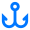
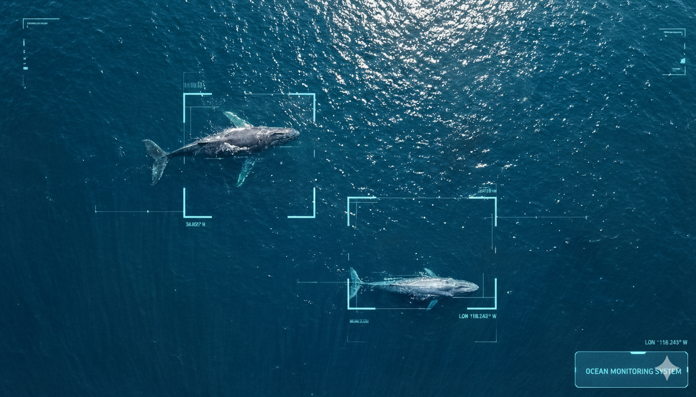
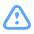
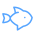
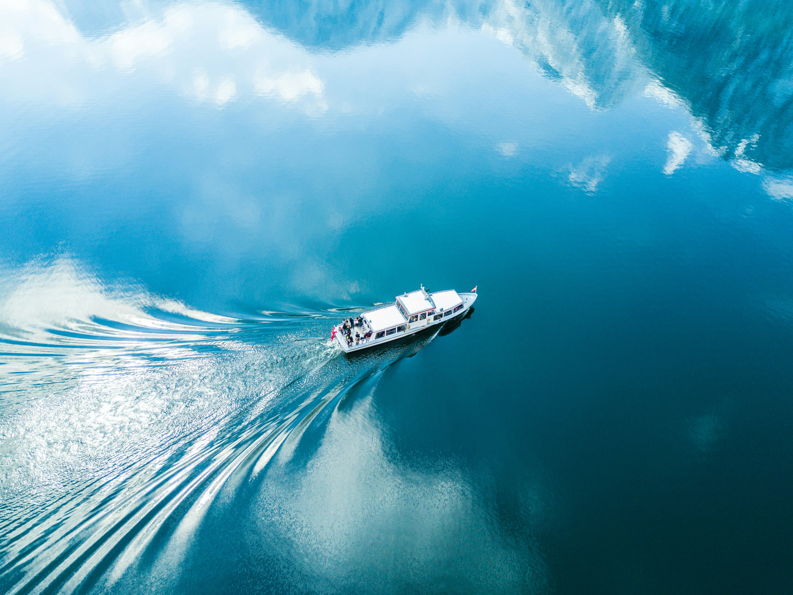
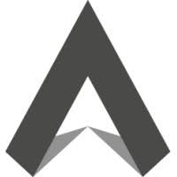
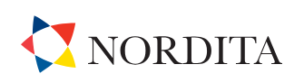

Durable Enclosures
Our hardware is designed to survive the most hostile ocean conditions, deployable on any maritime platform.

About the Technology
We provide durable enclosures that can be placed on any platform and survive hostile ocean conditions, generating valuable big data in the ocean.

Our hardware is designed to survive the most hostile ocean conditions, deployable on any maritime platform.
Successfully operated deployments in the Atlantic Ocean (October 2025) in collaboration with Noosphera.
We generate massive datasets from ocean environments, enabling unprecedented maritime intelligence.
The Problem
The ocean remains one of the most challenging environments for surveillance and safety operations.

Lack of real-time object awareness leading to tragic incidents.
Time-critical detection across vast ocean areas.
Limited visibility during night and adverse weather.

Monitoring marine life across territories.
Weather and behavioral pattern analysis.
Identifying vessels in crowded waterways.
The Solution
Complete data collection, detection, monitoring, and safety solutions for maritime operations.

Key Benefits
AI detection of vessels, icebergs, containers, and debris before they become threats.
High-FPS and IR-enabled safe operation in fog, rain, darkness, and extreme conditions.
MOB (Man Overboard) detection and non-cooperative vessel identification capabilities.
Meet regulatory requirements and gain insurance benefits through enhanced safety systems.
Packages
Perfect for individual vessel owners seeking advanced maritime surveillance capabilities.
Designed for multi-vessel operations with centralized control, real-time monitoring, and fleet-wide visibility.
Built for large fleets requiring custom integration and dedicated support.
Partnerships

Stealth mode